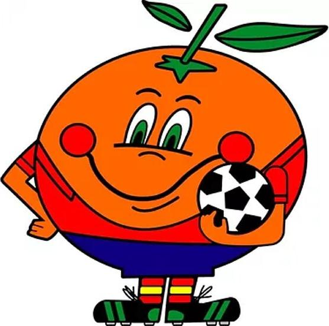

El Mundial de Fútbol de 1982 en España: Un evento inolvidable
En 1982, España tuvo el honor de organizar el Mundial de Fútbol, uno de los eventos deportivos más importantes del mundo. Fue la primera vez que nuestro país se convertía en el centro de atención del planeta fútbol, y este evento marcó un antes y un después en la historia de los mundiales. Además del fútbol, el torneo trajo consigo avances tecnológicos, grandes desafíos organizativos y una mascota inolvidable: Naranjito, que se convirtió en un símbolo de alegría y orgullo para España.
Un Mundial histórico
El Mundial de 1982 no solo destacó por su fútbol, sino también por su organización. Fue el torneo más grande de la historia hasta ese momento, con 24 equipos participantes en lugar de los 16 habituales. Esto significaba que había más partidos, más estadios que preparar y, por supuesto, más aficionados viajando por todo el país para disfrutar de la competición.
Los partidos se jugaron en 17 estadios diferentes, desde el Camp Nou en Barcelona hasta el Santiago Bernabéu en Madrid, pasando por estadios en ciudades como Sevilla, Valencia y Zaragoza. Organizar algo de esta magnitud en una época sin internet ni las tecnologías que tenemos hoy fue un reto enorme.
Para que todo funcionara, se necesitaron miles de personas trabajando detrás de las cámaras: desde técnicos encargados de las transmisiones televisivas (que llevaron los partidos a millones de hogares) hasta ingenieros que se aseguraron de que los sistemas de comunicación funcionaran sin problemas. Aunque hoy nos parezca normal, en 1982 montar una red de comunicación para un evento de esta magnitud era una tarea impresionante.
Naranjito: Más que una mascota
¿Quién no ha oído hablar de Naranjito? Esta simpática naranja con cara sonriente y una camiseta de fútbol roja se convirtió en el símbolo del Mundial de España 1982. Fue la primera vez que España usó una mascota para un evento deportivo, y Naranjito fue todo un éxito. Representaba lo mejor de nuestro país: la alegría, la hospitalidad y nuestra famosa fruta, la naranja.
Aunque algunos al principio se burlaban de él, con el tiempo Naranjito se ganó el cariño de todo el mundo. Incluso tuvo su propia serie de dibujos animados, donde vivía aventuras con sus amigos.

¿Te imaginas estar en 1982?
Piensa por un momento que estás en 1982. No hay teléfonos móviles, no hay Wi-Fi, y los ordenadores son algo que solo se ve en oficinas o grandes empresas. Ahora imagina que estás trabajando para organizar un Mundial.
- ¿Cómo harías para que los periodistas de todo el mundo puedan enviar sus noticias?
- ¿Cómo conectarías los estadios para que las cámaras de televisión puedan retransmitir los partidos?
- ¿Cómo garantizarías que los sistemas de entrada y los servicios para los aficionados funcionen correctamente?
No te preocupes, ¡volvemos a la actualidad!. En este proyecto, te convertirás en parte de un equipo técnico encargado de diseñar una red informática capaz de conectar estadios, salas de prensa y fan zones. Así, te pondrás en el lugar de esos profesionales que lograron que el Mundial de 1982 fuera un éxito.
La importancia de las redes de comunicación
El Mundial de 1982 fue una muestra de cómo el fútbol no es solo un deporte, sino también un desafío tecnológico y organizativo. Gracias a eventos como este, se desarrollaron sistemas de comunicación más avanzados, que han evolucionado hasta las redes informáticas que conocemos hoy.
Así que prepárate: como técnico en formación, tu misión será diseñar y montar una red informática moderna que podría haber facilitado muchísimo las cosas en el Mundial de 1982. ¿Crees que serías capaz de mejorar lo que hicieron hace más de 40 años? ¡Es tu momento para demostrarlo!